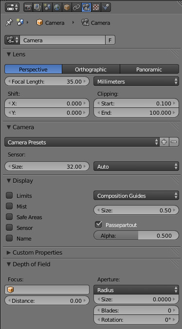
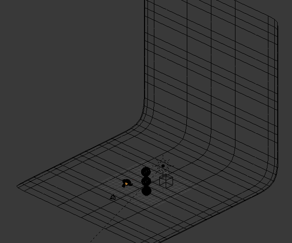
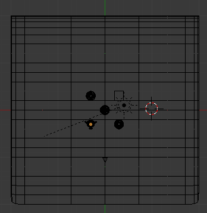
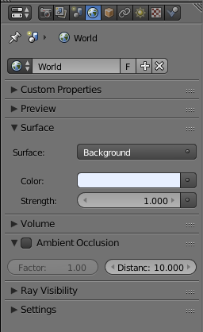
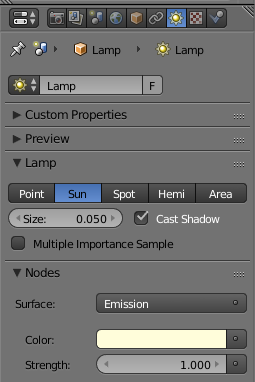
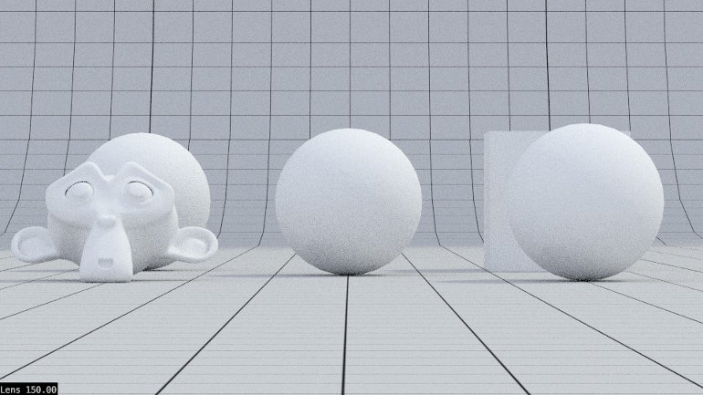
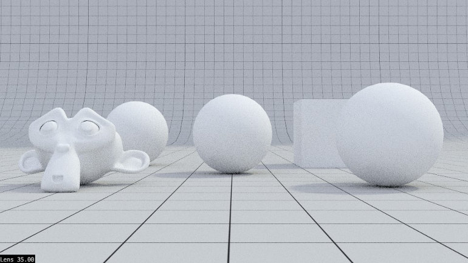
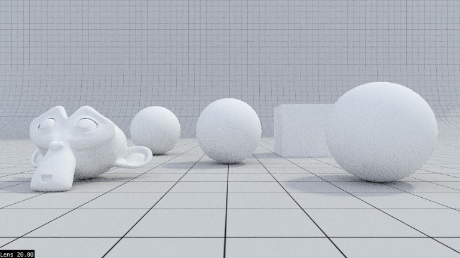
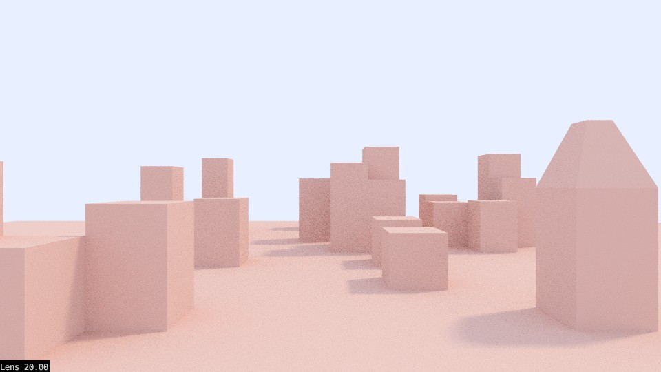
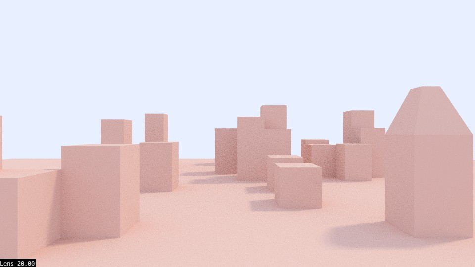

Configurações básicas da câmara
Blender Internal
Perspective/Ortographic/Panoramic: Tipo de câmara. Por pré-configuração, a câmara está em modo perspetiva. Em Perspective e Panoramic pode ser configurada a Focal Length (valor em mm da lente) ou ângulo do Field of View (campo de visão). Estes valores podem ser animada com keyframes, permitindo fazer zooms por exemplo. Se alterar o tipo de câmara para Ortographic, este parâmetro é substituído pelo Ortographic Scale.
Shift X e Y: deslocação horizontal e vertical da visão da câmara sem alterar o posicionamento da mesma na janela 3D View.
Clipping Start e End: distância visível através da câmara (o que irá ser renderizado). O que estiver para além do End e antes do Start não é visível no editor 3D View (visão da câmara) e não será renderizado. Se tiver a opção Limits ativada, consegue ver uma linha laranja que identifica esta distância.
Camera Presets e Sensor: permite escolher um modelo de câmara (Canon, Nikon, GoPro, etc.) ou definir uma configuração customizada do sensor.
Depth of Field Distance: distância para o ponto focal, distância da profundidade de campo. Se tiver a opção Limits activada, consegue ver um indicador (cruz amarela). É utilizado em combinação com o editor de nós para (des)focagem.
Depth of Field Object: permite especificar um objeto (a sua localização) como ponto focal. É utilizado em combinação com o editor de nós para (des)focagem.
Limits: torna (in)visível o alcance do Clipping (o que é visível pela câmara) e da distância focal.
Mist: torna visível os limites de nevoeiro (Mist) caso este esteja ativado.
Safe Areas: torna visível (na visão de câmara) linhas de segurança que permitem identificar áreas consideradas "seguras" para elementos importantes (títulos, etc.).
Sensor: torna visível (na visão de câmara) linha que representa limites do sensor.
Name: torna visível o nome da câmara em visão de câmra. É especialmente útil se tiver várias câmaras.
Composition Guides: permite ativar guias para auxílio na composição/enquadramentos (terços, centro, triângulo dourado, etc.).
Size: dimensão relativa da câmara na janela de 3D View. Não afeta imagem/render, apenas permite tornar a câmara com maior/menor dimensão na 3D View.
Passepartout: escurece a área fora da visão da câmara e o grau de opacidade é definido no controlador Alpha.
Cycles
No Cycles, a única diferença são as opções relativas às profundidade de Campo (Depth of Field).
Depth of Field - Distance: distância para o ponto focal, distância da profundidade de campo. Se tiver a opção Limits activada, consegue ver um indicador (cruz amarela). É utilizado em combinação com o editor de nós para (des)focagem.
Depth of Field - Focus: permite especificar um objeto (a sua localização) como ponto focal. É utilizado em combinação com o editor de nós para (des)focagem.
Aperture: permite escolher entre F/Stop (abertura relativa; mais comum na fotografia; números menores = maior desfoque) e Radius (raio da abertura da lente; 0 = todos os objetos surgem focados)
Aperture - Blades: número de lâminas da abertura. Se utilizar 3 ou +, será utilizada uma abertura com forma poligonal (em vez da circular pré-definida) o que irá afetar a forma dos elementos desfocados.
Aperture - Rotation: rotação das lâminas
Distância focal (focal length)
Compare a distância e o tamanho relativo dos objetos. Em síntese: lentes grande-angular exageram a distância e o tamanho relativo dos objetos; lentes telefoto esbatem diferenças na distância e tamanho relativo dos objetos
Para ilustrar as diferenças, construímos uma cena simples com 3 esferas, 1 cubo, 1 Suzanne, 1 plano no fundo/chão.
 A iluminação da cena é feita com o Background e uma luz Sun.
 150mm: teleobjetiva (ou lente telefoto), a visão aproxima-se e quando afastamos a câmara (para compensar e obter composição similar) a distância e diferenças de dimensão são esbatidas.
35mm: lente mais clássica, próxima da visão do olho humano.
20mm: lente/objetiva grande-angular, permite incluir mais cena na imagem o que é particularmente útil em arquitetura, interiores e paisagens. Permite realçar a diferença nas dimensões ou distância entre objetos, entre fundo e primeiro plano (objetos próximos aparentam ser muito grandes e objetos a distância moderada aparentam ser pequenos e estar distantes). Permite exagerar a dimensão relativa tornando os objetos mais próximos mais salientes, mais imponentes.
Nas imagens abaixo, foram utilizadas lentes com 100mm e 20mm. Obviamente, a câmara teve de ser ajustada/movimentada para compensar e obter uma composição similar.
 

Alguns comandos úteis
1. Adicionar nova câmara: adicione através do mesmo menu para adicionar objetos ou luzes (Add > Camera). Atalho é Shift +A.
2. Mudar câmara activa (câmara que irá renderizar): selecione a câmara e CTRL + NUMPAD 0 ou utilize o menu View > Cameras > Set Active Object as Camera.
Pode definir qualquer objeto como câmara (utilize o menu View > Cameras > Set Active Object as Camera). Esta opção é especialmente útil para ver alinhamentos ou enquadramentos. Exemplo: se tiver 2 personagens, pode ver como que através dos olhos de ambas para verificar a orientação das personagens, etc.
3. “Fly Mode”: utilize o Shift+F para ativar o “Camera Fly Mode”. Utilize o rato para apontar a câmara e WASD para mover-se. Rode o rato para (des)acelerar. BER para confirmar e BDR (ou ESC) para cancelar.
4. Rodar nos eixos: câmara roda como qualquer outro objeto. Selecione a câmara, clique em R e depois no eixo em que pretende rodar. Se clicar uma vez no X roda em torno do eixo X do mundo (global), se clicar XX (duas vezes no X) roda em torno do eixo X local (do próprio objeto).
5. Aproximar/afastar: selecione a câmara, clique em G e depois no botão do meio do rato (roda). Mexa o rato para aproximar ou afastar. O botão esquerdo do rato confirma, botão direito do rato cancela.
6. Deslocar num eixo: câmara move-se (translação) como qualquer outro objeto. Selecione a câmara, clique em G e no eixo em que pretende mover (se não clicar em nenhum eixo, move livremente).
7. Alternar perspetiva/ortogonal : Numpad 5
8. Colocar-se em visão câmara : Numpad 0
9.Colocar a câmara na visão atual : CTRL+ Alt + Numpad 0
Zoom in/out: rodar o botão do meio do rato (roda).